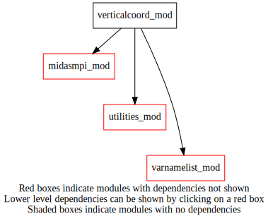
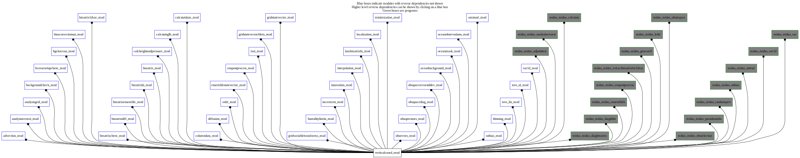

Dependency Diagrams:
 Direct Dependency Diagram¶
 Reverse Dependency Diagram¶
Description
MODULE verticalcoord (prefix=’vco’ category=’7. Low-level data objects’)
- Purpose
Derived type and procedures related to the vertical levels. The derived type includes a pointer to the associated VGRID descriptor.
Quick access
- Types
- Variables
- Routines
hybridcoefequalornot(),set_2m_10m_levels(),vco_allocateip1(),vco_deallocate(),vco_equal(),vco_getnumlev(),vco_levelmatchinglist(),vco_mpibcast(),vco_setupatmfromfile(),vco_setupfromfile(),vco_setupoceanfromfile(),vco_setupsfcfromfile(),vco_subsetornot()Needed modules
midasmpi_mod: MODULE midasMpi_mod (prefix=’mmpi’ category=’8. Low-level utilities and constants’)
vgrid_descriptors
varnamelist_mod: MODULE varNameList (prefix=’vnl’ category=’7. Low-level data objects’)
utilities_mod: MODULE utilities_mod (prefix=’utl’ category=’8. Low-level utilities and constants’)Types
- type verticalcoord_mod/struct_vco¶
- Type fields
% depths (*) [real ,pointer]
% initialized [logical ]
% ip1_depth (*) [integer ,pointer]
% ip1_m (*) [integer ,pointer]
% ip1_m_10m [integer ] :: ip1 value for the 10m momentum level
% ip1_sealevel [integer ]
% ip1_sfc [integer ] :: ip1 value for the surface (hybrid = 1)
% ip1_t (*) [integer ,pointer]
% ip1_t_2m [integer ] :: ip1 value for the 2m thermodynamic level
% nlev_depth [integer ]
% nlev_m [integer ]
% nlev_other (vnl_numvarmaxother) [integer ]
% nlev_t [integer ]
% null [integer ,pointer]
% vcode [integer ]
% vgrid [vgrid_descriptor ]
% vgridpresent [logical ]
Variables
- verticalcoord_mod/vco_ip1_other (20) [integer,public]¶
- verticalcoord_mod/vco_maxnumlevels [integer,parameter/public]¶
Subroutines and functions
- subroutine verticalcoord_mod/vco_allocateip1(vco)¶
- Purpose
Allocate the ip1 arrays of a vertical coordinate object.
- Arguments
vco [struct_vco ,inout,pointer] :: Vertical coordinate object
- Called from
- Call to
- subroutine verticalcoord_mod/vco_setupfromfile(vco, templatefile[, etiket_opt[, besilent_opt]])¶
- Purpose
Initialize vertical coordinate object with information from a standard file.
- Arguments
vco [struct_vco ,inout,pointer] :: Vertical coordinate object
templatefile [character ,in] :: Template file
- Options
etiket_opt [character ,in,] :: Optional argument etiket
besilent_opt [logical ,in,] :: Optional argument beSilent
- Called from
bcsc_rdstats(),ocebg_getfgeamplification(),bcs_getradiosondeweight(),bmat1d_setupbens(),ben_setuponeinstance(),bhi_setup(),ens_readensemble(),epp_addrandompert(),gio_readfromfile(),inn_gethcovcofromtrlmfile(),lbhi_setup(),oer_seterrbackscatanisice(),omf_ominusf(),omf_ominusfens(),thn_radiosonde(),midas_sstbias,midas_ssttrial,midas_adjointtest,midas_analysiserroroi,midas_calcstats,midas_diagbmatrix,midas_diaghbht,midas_enspostprocess,midas_ensembleh,midas_extractbmatrixfor1dvar,midas_gencoeff,midas_letkf,midas_obsimpact,midas_obsselection,midas_pseudosstobs,midas_randompert,midas_var,midas_var1d- Call to
utl_abort(),utl_varnamepresentinfile(),vnl_varnameisvalid(),vnl_varkindfromvarname(),vco_setupatmfromfile(),vco_setupoceanfromfile(),vco_setupsfcfromfile()
- subroutine verticalcoord_mod/vco_setupatmfromfile(vco, templatefile, etiket, besilent)¶
- Purpose
Initialize vertical coordinate object with information from a standard file. Use vgrid descriptor for atmospheric fields.
- Arguments
vco [struct_vco ,inout,pointer] :: Vertical coordinate object
templatefile [character ,in] :: Template file
etiket [character ,in]
besilent [logical ,in]
- Called from
- Call to
- subroutine verticalcoord_mod/vco_setupoceanfromfile(vco, templatefile, etiket, besilent)¶
- Purpose
Initialize vertical coordinate object with information from a standard file. For Ocean fields on depth levels.
- Arguments
vco [struct_vco ,inout,pointer] :: Vertical coordinate object
templatefile [character ,in] :: Template file
etiket [character ,in]
besilent [logical ,in]
- Called from
- Call to
utl_abort(),vnl_varnameisvalid(),vnl_varkindfromvarname(),vnl_varlevelfromvarname()
- subroutine verticalcoord_mod/vco_setupsfcfromfile(vco, besilent)¶
- Purpose
Initialize vertical coordinate object with information from a standard file. For surface only fields.
- Arguments
vco [struct_vco ,inout,pointer] :: Vertical coordinate object
besilent [logical ,in]
- Called from
- subroutine verticalcoord_mod/vco_deallocate(vco)¶
- Purpose
Deallocate vertical coordinate object
- Arguments
vco [struct_vco ,inout,pointer] :: Vertical coordinate object
- Called from
bmat1d_setupbens(),ben_setuponeinstance(),ens_readensemble()
- function verticalcoord_mod/vco_getnumlev(vco, varlevel[, varname_opt])¶
- Purpose
get number of vertical levels
- Arguments
vco [struct_vco ,in,pointer] :: Vertical coordinate object
varlevel [character ,in] :: ‘TH’, ‘MM’, ‘SF’, ‘SFMM’,
- Options
varname_opt [character ,in,] :: only needed for varLevel=’OT’
- Return
nlev [integer ]
- Called from
czp_ensurecompatibletops(),col_getnumlev(),ens_getnumlev(),epp_addrandompert(),epp_hybridrecentering(),epp_printrmsstats(),gsv_getnumlev(),vco_allocateip1(),midas_enspostprocess,midas_letkf- Call to
- subroutine verticalcoord_mod/vco_mpibcast(vco)¶
- Purpose
MPI broadcast of vertical coordinate object
- Arguments
vco [struct_vco ,inout,pointer] :: vertical coordinate object
- Called from
bmat1d_setupbens(),ben_setuponeinstance(),ens_readensemble()- Call to
- function verticalcoord_mod/vco_equal(vco1, vco2)¶
- Purpose
Compare two vertical grid object and provide a logical result if they are equal or not
- Arguments
vco1 [struct_vco ,in,pointer] :: vertical coordinate object one
vco2 [struct_vco ,in,pointer] :: vertical coordinate object two
- Return
equal [logical ]
- Called from
bcsc_rdstats(),bmat1d_setupbhi(),bhi_setup(),ens_readensemble(),gvt_transform_gsv(),gio_readfromfile(),gsv_copy(),int_hinterp_gsv(),vinterp_gsv_r8(),vinterp_gsv_r4(),int_tinterp_gsv(),lbhi_setup()- Call to
- function verticalcoord_mod/vco_subsetornot(vco_template, vco_full)¶
- Purpose
This function determines if vco_template is a subset of vco_full.
- Arguments
vco_template [struct_vco ,in,pointer] :: vertical coordinate object template
vco_full [struct_vco ,in,pointer] :: vertical coordinate object full
- Return
subset [logical ]
- Called from
- Call to
- function verticalcoord_mod/hybridcoefequalornot(vco1, vco2)¶
- Purpose
To compare two vertical coordinate hybrid coefficient object
- Arguments
vco1 [struct_vco ,in,pointer] :: vertical coordinate object one
vco2 [struct_vco ,in,pointer] :: vertical coordinate object two
- Return
equal [logical ]
- Called from
- subroutine verticalcoord_mod/vco_levelmatchinglist(thmatchinglist, mmmatchinglist, vco1, vco2)¶
- Purpose
This subroutine returns arrays of array indices of the levels (ip1s) in vco2 corresponding with the levels (ip1s) in vco1
- Arguments
thmatchinglist (vco1%nlev_t) [integer ,out] :: TH matching list
mmmatchinglist (vco1%nlev_m) [integer ,out] :: MM matching list
vco1 [struct_vco ,in,pointer] :: vertical coordinate object one
vco2 [struct_vco ,in,pointer] :: vertical coordinate object two
- Called from
- subroutine verticalcoord_mod/set_2m_10m_levels(vco)¶
- Purpose
To set 2-m and 10-m levels
- Arguments
vco [struct_vco ,in,pointer] :: vertical coordinate object
- Called from
{kind=link}
{kind=link}